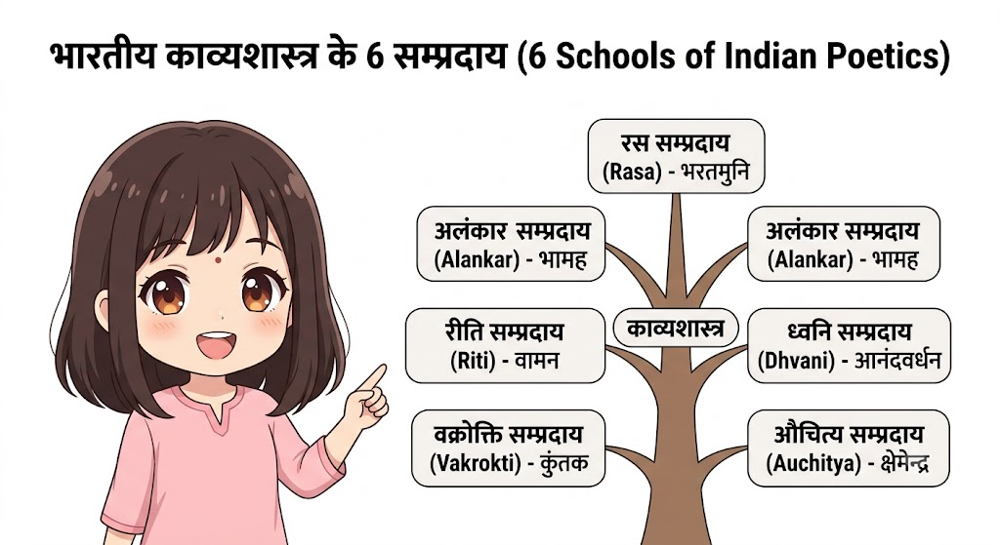

MIC - 5: भारतीय काव्यशास्त्र (Indian Poetics)
| HINDI | |
| 5 | |
| Study Space |
🎯 Unit 1: भारतीय काव्यशास्त्र का सामान्य परिचय (General Introduction to Indian Poetics)
1.1 भारतीय काव्यशास्त्र की मूलभूत अवधारणाएं (Basic Concepts of Indian Poetics)
1.1.1 भारतीय काव्यशास्त्र का सामान्य परिचय (General Introduction to Indian Poetics)
1. काव्यशास्त्र क्या है? (Understanding the Core Concept)
साधारण शब्दों में, जैसे व्याकरण (Grammatical Syntax) हमें भाषा को शुद्ध बोलना और लिखना सिखाता है, ठीक उसी तरह काव्यशास्त्र (Poetics/Aesthetics) हमें यह सिखाता है कि साहित्य या कविता की रचना कैसे की जाती है, उसमें सुंदरता (Aesthetic Value) कहाँ से आती है, और किसी कविता की गुणवत्ता को कैसे परखा जाता है।
- काव्यशास्त्र = काव्य + शास्त्र
- काव्य: वह शब्दावली या रचना जो मानव हृदय में भाव, संवेदना, रस और आनंद उत्पन्न करे।
- शास्त्र: किसी विषय का नियमबद्ध, तर्कसंगत और वैज्ञानिक अध्ययन (Systematic Science & Philosophy)।
यह केवल नियमों की किताब नहीं है, बल्कि यह साहित्य की समीक्षात्मक आँख (Analytical Vision) है।
2. नामकरण एवं ऐतिहासिक विकास (Historical Evolution & Terminology)
भारतीय परंपरा में इस विषय को अलग-अलग युगों में विभिन्न नामों से पुकारा गया:
- क्रियाकल्प (Kriya-Kalpa): प्राचीन काल (जैसे वात्स्यायन के 'कामसूत्र') में काव्य-रचना की कला को क्रियाकल्प कहा जाता था।
- अलंकारशास्त्र (Alankar Shastra): शुरुआती दौर में अलंकारों को काव्य का सबसे प्रमुख हिस्सा माना गया, इसलिए आचार्य भामह, वामन और उद्भट के समय इसे 'अलंकारशास्त्र' कहा गया।
- सौंदर्यशास्त्र (Aesthetics): वामन ने स्पष्ट कहा — "सौंदर्यमलंकारः" (सुंदरता ही अलंकार है)। इस दृष्टि से यह काव्य के सौंदर्य को परखने का शास्त्र बना।
- साहित्यशास्त्र / काव्यशास्त्र (Poetics): आगे चलकर जब इसमें रस, ध्वनि, गुण, रीति आदि सभी तत्त्वों का समावेश हुआ, तब आचार्य राजशेखर और मम्मट के समय से इसे 'काव्यशास्त्र' या 'साहित्यशास्त्र' का सर्वमान्य नाम मिला।
3. भारतीय काव्यशास्त्र का मुख्य लक्ष्य (Primary Objective)
भारतीय काव्यशास्त्रियों का मुख्य प्रश्न यह था: "काव्य की आत्मा (Soul of Poetry) क्या है?"
अर्थात, वह कौन-सा सबसे मुख्य तत्त्व (Core Element) है जिसके बिना किसी रचना को कविता माना ही नहीं जा सकता?
इसी 'आत्मा' की खोज के परिणामस्वरूप 6 मुख्य सम्प्रदाय (6 Major Schools of Poetics) अस्तित्व में आए।
4. भारतीय काव्यशास्त्र के 6 प्रमुख सम्प्रदाय (The 6 Major Schools)
ये छहों सम्प्रदाय भारतीय काव्यशास्त्र के छह मजबूत स्तंभ हैं। आइए इन्हें आसान तरीके से समझते हैं:
┌─────────────────────────────────────────┐
│ भारतीय काव्यशास्त्र के 6 सम्प्रदाय │
└────────────────────┬────────────────────┘
│
┌───────────┬───────────────┬───────────────┴───────────┬───────────────┬───────────────┐
│ │ │ │ │ │
▼ ▼ ▼ ▼ ▼ ▼
1. रस 2. अलंकार 3. रीति 4. ध्वनि 5. वक्रोक्ति 6. औचित्य
(भरतमुनि) (भामह) (वामन) (आनंदवर्धन) (कुंतक) (क्षेमेन्द्र)(1) रस सम्प्रदाय (Rasa School)
- प्रवर्तक: भरतमुनि (ग्रंथ: नाट्यशास्त्र)
- मूलमंत्र: "न हि रसादृते कश्चिदप्यर्थः प्रवर्तते" (रस के बिना काव्य का कोई अर्थ आगे नहीं बढ़ता)।
- आसान व्याख्या: कविता का मुख्य उद्देश्य पाठक या श्रोता के दिल में भावनाएँ (Emotions) जगाना है। जैसे करुणा, प्रेम, उत्साह, हास्य आदि। अगर कविता पढ़कर दिल में कोई भाव न जागे, तो वह व्यर्थ है।
(2) अलंकार सम्प्रदाय (Alankar School)
- प्रवर्तक: आचार्य भामह (ग्रंथ: काव्यालंकार)
- मूलमंत्र: "न कान्तमपि निर्भूषं विभाति वनितामुखम्" (जैसे किसी सुंदरी का मुख आभूषणों के बिना सुंदर नहीं लगता, वैसे ही कविता बिना अलंकार के सुंदर नहीं लगती)।
- आसान व्याख्या: भाषा को अलंकृत, सुंदर और सजावटी बनाकर प्रस्तुत करना ही काव्य की जान है।
(3) रीति सम्प्रदाय (Riti School)
- प्रवर्तक: आचार्य वामन (ग्रंथ: काव्यालंकार सूत्रवृत्ति)
- मूलमंत्र: "रीतिरात्मा काव्यस्य" (विशिष्ट पद-रचना ही काव्य की आत्मा है)।
- आसान व्याख्या: रीति का अर्थ है शैली (Style)। शब्दों को किस खास क्रम, मिठास (माधुर्य गुण) या तेजी (ओज गुण) के साथ सजाकर लिखा गया है, यही काव्य की पहचान है।
(4) ध्वनि सम्प्रदाय (Dhvani School)
- प्रवर्तक: आचार्य आनंदवर्धन (ग्रंथ: ध्वन्यालोक)
- मूलमंत्र: "काव्यस्यात्मा ध्वनिरिति" (ध्वनि ही काव्य की आत्मा है)।
- आसान व्याख्या: कविता का असली आनंद सीधे लिखे शब्दों (वाच्यार्थ) में नहीं, बल्कि उसके पीछे छिपे हुए व्यंग्यार्थ/इशारे (Suggested Meaning/Dhvani) में होता है।
(5) वक्रोक्ति सम्प्रदाय (Vakrokti School)
- प्रवर्तक: आचार्य कुंतक (ग्रंथ: वक्रोक्तिजीवितम्)
- मूलमंत्र: "वक्रोक्तिः काव्यजीवितम्" (वैचित्र्यपूर्ण/टेढ़ा कथन ही काव्य की जान है)।
- आसान व्याख्या: बात को साधारण तरीके से न कहकर अनूठे, घुमावदार और कलात्मक ढंग (Oblique & Artistic Expression) से कहना ही कविता है।
(6) औचित्य सम्प्रदाय (Auchitya School)
- प्रवर्तक: आचार्य क्षेमेन्द्र (ग्रंथ: औचित्यविचारचर्चा)
- मूलमंत्र: "औचित्यं रससिद्धस्य स्थिरं काव्यस्य जीवितम्" (औचित्य ही काव्य का स्थायी प्राण है)।
- आसान व्याख्या: औचित्य = सही जगह पर सही चीज़ का होना (Appropriateness/Balance)। अलंकार, रस, रीति या गुण चाहे कितने भी अच्छे हों, अगर वे सही स्थान और सीमा में प्रयोग नहीं होंगे तो काव्य का सौंदर्य नष्ट हो जाएगा।


💡 Quick Recall Table (परीक्षा हेतु त्वरित याद करने की तालिका)
| क्र.सं. | सम्प्रदाय (School) | मुख्य आचार्य (Founder) | प्रमुख ग्रंथ (Key Text) | काव्य की आत्मा (Soul of Poetry) |
|---|---|---|---|---|
| 1 | रस सम्प्रदाय | भरतमुनि | नाट्यशास्त्र | अलौकिक आनंद और भाव (Emotions) |
| 2 | अलंकार सम्प्रदाय | आचार्य भामह | काव्यालंकार | भाषा का सौंदर्य व आभूषण (Figures of Speech) |
| 3 | रीति सम्प्रदाय | आचार्य वामन | काव्यालंकार सूत्रवृत्ति | विशिष्ट रचना शैली (Style of Writing) |
| 4 | ध्वनि सम्प्रदाय | आनंदवर्धन | ध्वन्यालोक | छिपा हुआ व्यंग्यार्थ (Suggested Meaning) |
| 5 | वक्रोक्ति सम्प्रदाय | आचार्य कुंतक | वक्रोक्तिजीवितम् | उक्ति का अनूठापन (Oblique Expression) |
| 6 | औचित्य सम्प्रदाय | आचार्य क्षेमेन्द्र | औचित्यविचारचर्चा | सभी तत्त्वों का सही संतुलन (Appropriateness) |
1.1.2 काव्य-लक्षण (Characteristics & Definitions of Poetry)
1. काव्य-लक्षण का क्या अर्थ है? (Concept & Meaning)
"लक्षण" का अर्थ होता है — परिभाषा (Definition), पहचान का माध्यम या अनिवार्य गुण (Essential Criteria)।
जब आचार्यों के सामने यह सवाल आया कि "दुनिया की हर लिखित या बोली गई बात कविता/काव्य क्यों नहीं होती?", तो उन्होंने उन तत्त्वों की खोज की जो किसी साधारण वाक्य को 'काव्य' का दर्जा देते हैं। इन्हीं अनिवार्य कसौटियों और परिभाषाओं को काव्यशास्त्र में 'काव्य-लक्षण' कहा गया।
2. काव्य-लक्षण के विकास के 3 मुख्य चरण (Historical Evolution)
भारतीय आचार्यों ने काव्य-लक्षण तय करने में 3 अलग-अलग दृष्टिकोण अपनाए:
- शब्द और अर्थ को प्रधान मानने वाले आचार्य: भामह, वामन, रुद्रट, मम्मट आदि। (इन्होंने शब्द और उसके अर्थ के संतुलन पर ज़ोर दिया)।
- केवल 'शब्द' को प्रधान मानने वाले आचार्य: दंडी, पंडितराज जगन्नाथ आदि। (इनका मानना था कि सुंदर शब्द ही काव्य का मूल आधार है)।
- रस और भाव को प्रधान मानने वाले आचार्य: आनंदवर्धन, आचार्य विश्वनाथ आदि। (इन्होंने आंतरिक अनुभूति और 'रस' को काव्य की परिभाषा माना)।
3. प्रमुख प्राचीन एवं मध्यकालीन आचार्यों के अनुसार काव्य-लक्षण
(क) आचार्य भामह (6ठी शताब्दी) — शब्द और अर्थ का मेल
- प्रसिद्ध संस्कृत सूत्र:
"शब्दार्थौ सहितौ काव्यम्" (काव्यालंकार)
- व्याख्या: शब्द (Word) और अर्थ (Meaning) का सुंदर, भावपूर्ण और साथ-साथ (सहित) होना ही काव्य है।
- विशेषता: भामह ने माना कि न केवल शब्द अकेले काव्य बना सकता है और न केवल अर्थ। जैसे शरीर के बिना आत्मा और आत्मा के बिना शरीर अधूरा है, वैसे ही शब्द और अर्थ का परस्पर मेल ही काव्य है।
(ख) आचार्य मम्मट (11वीं शताब्दी) — त्रिगुण समन्वय (सर्वमान्य परिभाषा)
- प्रसिद्ध संस्कृत सूत्र:
"तद्दोषौ शब्दार्थौ सगुणावनलंकृती पुनः क्वापि" (काव्यप्रकाश)
- व्याख्या: काव्य वह शब्द और अर्थ का समूह है जो:
- अदोषौ: दोषरहित (व्याकरण और अर्थ संबंधी गलतियों से मुक्त) हो।
- सगुणौ: गुणों (माधुर्य, ओज, प्रसाद) से युक्त हो।
- अनलंकृती पुनः क्वापि: सामान्यतः अलंकारों से सजा हो, पर यदि कहीं स्पष्ट अलंकार न भी हो और रस मौजूद हो, तो भी वह काव्य ही कहलाएगा।
- विशेषता: मम्मट की यह परिभाषा सबसे अधिक व्यावहारिक और संतुलित मानी जाती है।
(ग) आचार्य विश्वनाथ (14वीं शताब्दी) — रस की प्रधानता
- प्रसिद्ध संस्कृत सूत्र:
"वाक्यं रसात्मकं काव्यम्" (साहित्यदर्पण)
- व्याख्या: रस से युक्त (Emotionally rich) वाक्य ही काव्य है।
- विशेषता: विश्वनाथ ने मम्मट की जटिल परिभाषा का खंडन करते हुए कहा कि काव्य की असली आत्मा 'रस' है। अगर किसी वाक्य को पढ़कर पाठक के दिल में कोई भाव (प्रेम, करुणा, आनंद) न जागे, तो चाहे उसमें कितने भी गुण और अलंकार क्यों न हों, वह काव्य नहीं बन सकता।
(घ) पंडितराज जगन्नाथ (17वीं शताब्दी) — रमणीयता का सिद्धांत
- प्रसिद्ध संस्कृत सूत्र:
"रमणीयार्थ प्रतिपादकः शब्दः काव्यम्" (रसगंगाधर)
- व्याख्या: रमणीय (सुंदर/आनंददायक) अर्थ प्रकट करने वाला शब्द ही काव्य है।
- विशेषता: जगन्नाथ ने 'शब्द' को मुख्य माना। ऐसा शब्द जो मन को आनंदित कर दे और लोकोत्तर (आलौकिक) चमत्कार पैदा करे, वही काव्य है।

4. आधुनिक हिंदी विचारकों के अनुसार काव्य-लक्षण
भारतीय काव्यशास्त्र की यह परंपरा आधुनिक हिंदी साहित्य के महान आलोचकों तक पहुँची:
- आचार्य रामचंद्र शुक्ल:
"जिस प्रकार आत्मा की मुक्तावस्था ज्ञानदशा कहलाती है, उसी प्रकार हृदय की मुक्तावस्था रसदशा कहलाती है। हृदय की इसी मुक्ति की साधना के लिए मनुष्य की वाणी जो शब्द-विधान करती आई है, उसे कविता कहते हैं।"
- जयशंकर प्रसाद:
"काव्य आत्मा की संकल्पात्मक अनुभूति है, जिसका संबंध विश्लेषण, विकल्प या विज्ञान से नहीं है।"
- सुमित्रानंदन पंत:
"कविता हमारे परिपूर्ण क्षणों की वाणी है।"
💡 Quick Recall Table (परीक्षा हेतु त्वरित रिवीजन)
| आचार्य / विद्वान | काल/शताब्दी | मुख्य ग्रंथ | काव्य-लक्षण का मूल सार |
|---|---|---|---|
| भामह | 6ठी शताब्दी | काव्यालंकार | शब्द और अर्थ का सहभाव (मेल) |
| मम्मट | 11वीं शताब्दी | काव्यप्रकाश | दोषरहित, गुणयुक्त व अलंकारयुक्त शब्द-अर्थ |
| विश्वनाथ | 14वीं शताब्दी | साहित्यदर्पण | रसात्मक वाक्य (रस ही काव्य का प्राण) |
| जगन्नाथ | 17वीं शताब्दी | रसगंगाधर | सुंदर और आनंददायक अर्थ प्रकट करने वाला शब्द |
| रामचंद्र शुक्ल | आधुनिक काल | चिंतामणि | हृदय की मुक्तावस्था के लिए किया गया शब्द-विधान |
🎯 Unit 2: प्रमुख अलंकार (Major Figures of Speech / Alankars)
2.1.1 श्लेष अलंकार (Shlesh Alankar / Pun)
1. लक्षण एवं अवधारणा (Concept & Definition)
'श्लेष' का शाब्दिक अर्थ होता है — "चिपका हुआ" (Clinging/Pun)।
जब काव्य में प्रयुक्त एक ही शब्द के साथ एक से अधिक अर्थ चिपके हुए या जुड़े होते हैं (अर्थात् परिस्थिति और संदर्भ के अनुसार उस एक शब्द के अलग-अलग अर्थ निकलते हैं), तो वहाँ 'श्लेष अलंकार' होता है।
लक्षण सूत्र: "श्लिष्टैः पदैरनेकार्थाभिधाने श्लेष इष्यते॥"सरल अर्थ: श्लिष्ट (एक से अधिक अर्थ रखने वाले) शब्दों द्वारा जहाँ अनेक अर्थों का कथन हो, वहाँ श्लेष अलंकार होता है।
- मुख्य पहचान: शब्द वाक्य में केवल एक बार आएगा, लेकिन वाक्य में आए अलग-अलग शब्दों/वस्तुओं के संदर्भ में उसके अर्थ बदल जाएँगे।
2. श्लेष अलंकार के प्रकार (Types of Shlesh Alankar)
श्लेष अलंकार मुख्य रूप से दो प्रकार का होता है:
┌─────────────────────────────────────────┐
│ श्लेष अलंकार के भेद (2 Types) │
└────────────────────┬────────────────────┘
│
┌────────────────────────────────────┴────────────────────────────────────┐
▼ ▼
1. अभंग श्लेष (Abhang Shlesh) 2. सभंग श्लेष (Sabhang Shlesh)
शब्द को बिना तोड़े/खंडित किए शब्द के टुकड़े/खंड (break) करके
अनेक अर्थ निकलते हैं। अलग-अलग अर्थ निकाले जाते हैं।(क) अभंग श्लेष (Abhang Shlesh)
जहाँ शब्द के टुकड़े किए बिना ही उसके कई अर्थ निकलते हैं।
- उदाहरण: "रहिमन पानी राखिये..." (यहाँ 'पानी' शब्द को तोड़े बिना ही चमक, इज्जत और जल अर्थ निकलते हैं)।
(ख) सभंग श्लेष (Sabhang Shlesh)
जहाँ शब्द के टुकड़े/खंड (Break) करने पर ही अलग-अलग अर्थ प्राप्त होते हैं।
- उदाहरण: "अजो तरौना ही रह्यो, श्रुति सेवत् इक अंग।"
- यहाँ 'तरौना' के दो अर्थ बनते हैं:
- बिना टुकड़े किए: तरौना = कान का आभूषण।
- टुकड़े करके (तर + औना): जो तैर न सका / जिसका उद्धार न हुआ।
3. प्रमुख उदाहरण एवं विस्तृत स्पष्टीकरण (Key Examples with Analysis)
(1) उदाहरण 1 (सबसे प्रसिद्ध उदाहरण)
"रहिमन पानी राखिये, बिन पानी सब सून।पानी गये न ऊबरै, मोती, मानुष, चून॥"
विस्तृत विश्लेषण:
दोहे की दूसरी पंक्ति में 'पानी' शब्द एक ही बार आया है, परंतु नीचे दी गई तीन चीज़ों के संदर्भ में इसके तीन अलग-अलग अर्थ चिपके हुए हैं:
- मोती के पक्ष में ➔ कांति / चमक (Luster): चमक के बिना मोती की कोई कीमत नहीं रहती।
- मानुष (मनुष्य) के पक्ष में ➔ आत्म-सम्मान / इज्जत (Self-Respect): इज्जत या प्रतिष्ठा चले जाने पर मनुष्य का जीवन व्यर्थ हो जाता है।
- चून (आटा / चूना) के पक्ष में ➔ जल (Water): बिना जल के आटे को गूँथा नहीं जा सकता और न ही चूने का प्रयोग संभव है।
(2) उदाहरण 2
"चरन धरत चिंता करत, चितवत चारों ओर।सुबरन को ढूँढ़त फिरत, कवि, व्यभिचारी, चोर॥"
विस्तृत विश्लेषण:
यहाँ 'सुबरन' शब्द एक बार प्रयुक्त हुआ है, लेकिन तीन अलग-अलग व्यक्तियों के संदर्भ में इसके तीन अर्थ हैं:
- कवि के संदर्भ में ➔ सु-वर्ण (सुंदर अक्षर / अच्छे शब्द): कवि हमेशा अपनी कविता के लिए सुंदर और सटीक शब्दों की तलाश में रहता है।
- व्यभिचारी के संदर्भ में ➔ सु-वर्ण (सुंदर रूप-रंग / सुंदर स्त्री): कामी या व्यभिचारी व्यक्ति हमेशा सुंदरता की खोज में रहता है।
- चोर के संदर्भ में ➔ सुवर्ण (सोना / स्वर्ण / धन): चोर हमेशा धन-दौलत और सोने की तलाश में रहता है।
(3) उदाहरण 3
"जो रहीम गति दीप की, कुल कपूत गति सोय।बारे उजियारो करे, बड़े अँधेरो होय॥"
विस्तृत विश्लेषण:
यहाँ दो शब्दों में श्लेष अलंकार है — 'बारे' और 'बड़े':
- 'बारे' के दो अर्थ:
- दीपक के संदर्भ में = जलाने पर (Lighting the lamp).
- पुत्र/कपूत के संदर्भ में = बाल्यकाल/बचपन में (In childhood).
- 'बड़े' के दो अर्थ:
- दीपक के संदर्भ में = बुझ जाने पर (Extinguishing).
- पुत्र/कपूत के संदर्भ में = बड़ा होने पर (Growing up).

💡 Quick Recall Table (परीक्षा हेतु त्वरित रिवीजन)
| अलंकार | मूल लक्षण | मुख्य भेद | प्रसिद्ध शब्द | विभिन्न अर्थ |
|---|---|---|---|---|
| श्लेष | एक शब्द में multiple meanings चिपके होते हैं। | अभंग (बिना तोड़े)<br> |
2.1.2 यमक अलंकार (Yamak Alankar / Repetition of Words with Different Meanings)
1. लक्षण एवं अवधारणा (Concept & Definition)
'यमक' का शाब्दिक अर्थ होता है — "युग्म" या "जोड़ा" (Pair/Twin)।
जब काव्य में एक ही शब्द की आवृत्ति (Repetition) दो या दो से अधिक बार हो, और हर बार उसका अर्थ अलग-अलग (भिन्न) हो, तो वहाँ 'यमक अलंकार' होता है।
लक्षण सूत्र: "सत्यर्थे पृथगर्थायाः स्वरव्यंजनसंहतेः। क्रमेण तेनैवावृत्तिर्यमकं निगद्यते॥"सरल अर्थ: अर्थ होने पर भिन्न-भिन्न अर्थ वाले स्वर और व्यंजनों के समूह (शब्दों) की उसी क्रम में आवृत्ति को 'यमक' कहते हैं।
- मुख्य पहचान:
- शब्द की पुनरावृत्ति (कम से कम 2 बार आना आवश्यक)।
- प्रत्येक बार अर्थ का पूर्णतः भिन्न होना।
2. श्लेष और यमक में मुख्य अंतर (Difference between Shlesh & Yamak)
अक्सर परीक्षा में श्लेष और यमक के बीच का अंतर पूछा जाता है:
| आधार (Basis) | श्लेष अलंकार (Shlesh) | यमक अलंकार (Yamak) |
|---|---|---|
| शब्द की संख्या | शब्द केवल एक बार आता है। | शब्द दो या अधिक बार दोहराया जाता है। |
| अर्थ की स्थिति | एक ही शब्द में अनेक अर्थ चिपके रहते हैं। | हर बार शब्द का अलग-अलग अर्थ होता है। |
| मूल मंत्र | एक शब्द ➔ अनेक अर्थ | एक से अधिक शब्द ➔ अलग-अलग अर्थ |
3. यमक अलंकार के प्रकार (Types of Yamak Alankar)
यमक अलंकार मुख्य रूप से दो प्रकार का होता है:
┌─────────────────────────────────────────┐
│ यमक अलंकार के भेद (2 Types) │
└────────────────────┬────────────────────┘
│
┌────────────────────────────────────┴────────────────────────────────────┐
▼ ▼
1. अभंग पद यमक (Abhang Yamak) 2. सभंग पद यमक (Sabhang Yamak)
शब्द को बिना तोड़े/खंडित किए किसी शब्द को तोड़े/खंडित करके
उसका पुनरावृत्त रूप अलग अर्थ देता है। दूसरा समान शब्द और अर्थ बनाया जाता है।(क) अभंग पद यमक (Abhang Yamak)
जहाँ शब्द को बिना तोड़े ही उसका दोहराया गया रूप अलग अर्थ देता है।
- उदाहरण: "कनक कनक ते सौ गुनी..." (यहाँ 'कनक' को बिना तोड़े पहला = धतूरा, दूसरा = सोना)।
(ख) सभंग पद यमक (Sabhang Yamak)
जहाँ कम से कम एक शब्द को तोड़कर (खंड करके) यमक की आवृत्ति बनाई जाती है।
- उदाहरण: "कुमुदिनी मानसी मोदिनी।" (यहाँ 'मानसी' और 'मोदिनी' में 'सि' और 'दि' के साथ भंग करके तुक/समानता बनाई जाती है)।
4. प्रमुख उदाहरण एवं विस्तृत स्पष्टीकरण (Key Examples with Analysis)
(1) उदाहरण 1 (सबसे प्रसिद्ध उदाहरण)
"कनक कनक ते सौ गुनी, मादकता अधिकाय।वा खाए बौराय जग, या पाए बौराय॥"
विस्तृत विश्लेषण:
यहाँ 'कनक' शब्द की आवृत्ति लगातार दो बार हुई है, और दोनों बार इसका अर्थ बिलकुल अलग है:
- प्रथम 'कनक' का अर्थ ➔ धतूरा (Datura/Poisonous Fruit): जिसे केवल खाने (खाए) से ही मनुष्य बौरा (पागल) जाता है।
- द्वितीय 'कनक' का अर्थ ➔ सोना / स्वर्ण (Gold/Wealth): जिसे केवल पाने (पाए) मात्र से ही मनुष्य धन के घमंड में बौरा (पागल) जाता है।
(2) उदाहरण 2
"तीन बेर खाती थीं, वे तीन बेर खाती हैं।"
विस्तृत विश्लेषण:
कवि भूषण द्वारा रचित इस पंक्ति में 'तीन बेर' पद की आवृत्ति दो बार हुई है:
- प्रथम 'तीन बेर' का अर्थ ➔ समय / बार (Three times a day): रानी पद्मावती या मुगल रानियाँ दिन में तीन बार (सुबह, दोपहर, शाम) भोजन करती थीं।
- द्वितीय 'तीन बेर' का अर्थ ➔ बेर का फल (Three Berries): अब विपत्ति के समय जंगलों में वे केवल तीन दाने 'बेर' (झाड़ी का फल) खाकर दिन बिताती हैं।
(3) उदाहरण 3
"काली घटा का घमंड घटा, नभ मंडल तारक वृंद खिले।"
विस्तृत विश्लेषण:
यहाँ 'घटा' शब्द दो बार प्रयुक्त हुआ है:
- प्रथम 'घटा' का अर्थ ➔ काले बादल (Dark Clouds): वर्षा ऋतु के उमड़ते हुए काले बादल।
- द्वितीय 'घटा' का अर्थ ➔ कम होना / घट जाना (Decreased/Reduced): शरद ऋतु आने पर बादलों का अहंकार और उनका प्रभाव कम हो गया।
(4) उदाहरण 4
"सरंग ले सारंग चल्यो, सारंग पूज्यो आय।सारंग में सारंग धरियो, सारंग सारंग माय॥"
विस्तृत विश्लेषण:
यह यमक अलंकार का एक अद्भुत उदाहरण है जहाँ 'सारंग' शब्द कई बार आया है और हर बार अर्थ अलग है (दीपक, स्त्री, कपड़ा, हवा आदि)।

2.1.3 वक्रोक्ति अलंकार (Vakrokti Alankar / Oblique Expression)
1. लक्षण एवं अवधारणा (Concept & Definition)
'वक्रोक्ति' दो शब्दों के मेल से बना है — वक्र + उक्ति।
- वक्र: टेढ़ा, घुमावदार, व्यंग्यात्मक या अनूठा।
- उक्ति: कथन, बात, या वाक्य।
सरल शब्दों में: जब वक्ता (बोलने वाला) किसी बात को किसी खास अभिप्राय (Meaning) से कहता है, लेकिन श्रोता (सुनने वाला) जानबूझकर या कंठ के लहजे (Tone) के कारण उसका दूसरा/टेढ़ा अर्थ निकाल लेता है, तो वहाँ 'वक्रोक्ति अलंकार' होता है।
लक्षण सूत्र: "यदुक्यान्यथा वाक्यमन्यथा ह्युच्यते जनैः। श्लेषेण काक्वा वा ज्ञेया सा वक्रोक्तिस्तथा द्विधा॥"सरल अर्थ: जब वक्ता द्वारा कहे गए वाक्य को सुनने वाला श्लेष या काकु (कंठ ध्वनि) के माध्यम से किसी दूसरे ही अर्थ में ग्रहण कर लेता है, तब वक्रोक्ति अलंकार होता है।
2. वक्रोक्ति के 2 मुख्य भेद (2 Main Types of Vakrokti)
वक्रोक्ति अलंकार को मुख्य रूप से दो भागों में बाँटा जाता है:
┌─────────────────────────────────────────┐
│ वक्रोक्ति अलंकार के भेद (2 Types) │
└────────────────────┬────────────────────┘
│
┌────────────────────────────────────┴────────────────────────────────────┐
▼ ▼
1. श्लेष वक्रोक्ति (Shlesh Vakrokti) 2. काकु वक्रोक्ति (Kaku Vakrokti)
शब्द के श्लेष (अनेक अर्थ) का सहारा कंठ के विशेष लहज़े (Intonation / Pitch)
लेकर दूसरा अर्थ निकाला जाता है। के कारण अर्थ बदल जाता है।3. उदाहरणों के साथ विस्तृत विश्लेषण (Detailed Analysis with Examples)
(क) श्लेष वक्रोक्ति (Shlesh-based Oblique Expression)
जहाँ एक ही शब्द में छिपे कई अर्थों (श्लेष) का फायदा उठाकर श्रोता जानबूझकर वक्ता को कोई और अर्थ सुना देता है।
उदाहरण 1 (राधा और कृष्ण का प्रसिद्ध संवाद):राधा (अंदर से): "को तुम?" (कौन हो तुम?)
कृष्ण (बाहर से): "घनस्याम हम।" (मैं घनश्याम / कृष्ण हूँ।)
राधा (वक्रोक्ति करते हुए): "तो कितहू बरसो।" (यदि तुम घनश्याम यानी काले बादल हो, तो कहीं और जाकर बरसो!)
स्पष्टीकरण:
यहाँ 'घनश्याम' शब्द के दो अर्थ हैं — 1. श्री कृष्ण 2. काले बादल। कृष्ण ने अपना नाम बताया, पर राधा जी ने 'काले बादल' वाला अर्थ लेकर चुटकी ली और कहा कि "यहाँ तुम्हारा क्या काम, कहीं और जाकर बरसो।"
उदाहरण 2 (एक अन्य श्लेष वक्रोक्ति):वक्ता: "एक कबूतर देख हाथ में पूछा, कहाँ अपर है?"श्रोता (नूरजहाँ): "अपर कैसा? वह उड़ गया सफर है!"
स्पष्टीकरण:
- जहांगीर ने पूछा कि दूसरा कबूतर कहाँ है? (यहाँ अपर = दूसरा / Secondary)।
- नूरजहाँ ने 'अपर' शब्द का दूसरा अर्थ निकाला (यहाँ अ-पर = बिना पर/पंख का / Without wings)। नूरजहाँ ने उत्तर दिया, "वह बिना पंख का कहाँ है? उसके तो पंख हैं, इसलिए वह उड़ गया!"
(ख) काकु वक्रोक्ति (Tone-based Oblique Expression)
जहाँ शब्द का अर्थ तो एक ही रहता है, लेकिन बोलने वाले के कंठ स्वर के बदलाव (Tone / Modulation) के कारण वाक्य का अर्थ बदल जाता है (प्रायः 'हाँ' का अर्थ 'ना' में बदल जाता है)।
उदाहरण 3 (सीता-राम संवाद):"मै सुकुमारि नाथ बन जोगू। तुमहिं उचित तप मोकहुँ भोगू॥"
स्पष्टीकरण:
यह तुलसीदास जी की रचना 'रामचरितमानस' की पंक्ति है।
- शब्दों का सीधा अर्थ: "मैं सुकुमारी (कोमल) हूँ और स्वामी वन के योग्य हैं। आपके लिए तपस्या उचित है और मेरे लिए सुख-भोग।"
- काकु (कंठ के लहजे) से निकला अर्थ: सीता जी व्यंग्य में अपने स्वर को बदलकर कहती हैं — "क्या मैं सुकुमारी हूँ और आप ही वन जाने के योग्य हैं? (अर्थात् नहीं! अगर आप वन जा सकते हैं, तो मैं भी आपके साथ जा सकती हूँ।)"

💡 Quick Recall Table (परीक्षा हेतु त्वरित रिवीजन)
| अलंकार | मूल पहचान | भेद | आधार | प्रसिद्ध उदाहरण |
|---|---|---|---|---|
| वक्रोक्ति | बात को घुमावदार/व्यंग्यात्मक ढंग से समझना। | श्लेष वक्रोक्ति | शब्द का दूसरा अर्थ लेना (Pun) | घनस्याम हम ➔ तो कितहू बरसो |
| काकु वक्रोक्ति | कंठ की ध्वनि / टोन (Tone) | मै सुकुमारि नाथ बन जोगू |
2.1.4 उपमा अलंकार (Upma Alankar / Simile)
1. एकदम आसान शब्दों में समझें (Super Simple Concept)
'उपमा' का सीधा सा मतलब होता है — तुलना करना (Comparison) या दो चीज़ों में बराबरी दिखाना।
जब किसी साधारण चीज़ (जिसकी बात हो रही है) की सुंदरता, गुण या रंग-रूप को समझाने के लिए उसकी तुलना किसी बहुत प्रसिद्ध या मशहूर चीज़ से कर दी जाती है, तो वहाँ 'उपमा अलंकार' होता है।
सरल सूत्र:A की तुलना B से करना = उपमा अलंकार
(जैसे: उसका चेहरा चाँद जैसा सुंदर है।)
2. उपमा के 4 मुख्य अंग (The 4 Elements of Simile)
उपमा अलंकार को समझने के लिए इसके 4 अंगों (Parts) को जानना सबसे ज़रूरी है:
| क्र.सं. | अंग (Element) | आसान अर्थ (Easy Meaning) | उदाहरण से समझें ("मुख चाँद सा सुंदर है") |
|---|---|---|---|
| 1 | उपमेय (Upmeya) | जिसकी तुलना की जा रही है। | मुख (चेहरा) |
| 2 | उपमान (Upman) | जिस प्रसिद्ध चीज़ से तुलना की जा रही है। | चाँद (Moon) |
| 3 | वाचक शब्द (Vachak Shabd) | तुलना बताने वाला पहचान का शब्द। | सा (जैसे: सा, सी, से, सम, समान, जिमि) |
| 4 | साधारण धर्म (Sadharan Dharm) | वह गुण (Quality) जो दोनों में एक जैसा है। | सुंदर (Beauty) |
3. उपमा अलंकार के 2 मुख्य भेद (2 Main Types)
उपमा अलंकार मुख्य रूप से दो प्रकार का होता है:
┌─────────────────────────────────────────┐
│ उपमा अलंकार के भेद (2 Types) │
└────────────────────┬────────────────────┘
│
┌────────────────────────────────────┴────────────────────────────────────┐
▼ ▼
1. पूर्णोपमा (Purnopma) 2. लुप्तोपमा (Luptopma)
जिसमें उपमा के चारों अंग (उपमेय, उपमान, जिसमें उपमा का कोई 1 या 2 अंग
वाचक शब्द, साधारण धर्म) मौजूद हों। गायब (लुप्त) हो।(क) पूर्णोपमा (Purna + Upma)
जहाँ उपमा के चारों के चारों अंग साफ़-साफ़ लिखे हों।
- उदाहरण: "पीपर पात सरिस मन डोला।"
- उपमेय: मन
- उपमान: पीपर पात (पीपल का पत्ता)
- वाचक शब्द: सरिस (जैसा)
- साधारण धर्म: डोला (चंचल होना/हिलना)
(चारों अंग मौजूद हैं, इसलिए यह पूर्णोपमा है।)
(ख) लुप्तोपमा (Lupta + Upma)
जहाँ चारों अंगों में से कोई एक या दो अंग गायब (Hidden/Missing) हों, फिर भी तुलना समझ आ रही हो।
- उदाहरण: "मखमल के झूले पड़े, हाथी-सा टीला।"
- यहाँ 'टीला' (उपमेय), 'हाथी' (उपमान), और 'सा' (वाचक शब्द) तो है, लेकिन साधारण धर्म (विशाल होना/बड़ा होना) गायब है। इसलिए यह लुप्तोपमा है।
4. प्रमुख उदाहरण एवं आसान स्पष्टीकरण (Key Examples with Analysis)
(1) उदाहरण 1 (सबसे आसान और प्रसिद्ध उदाहरण)
"हरिपद कोमल कमल से।"
विस्तृत विश्लेषण:
कवि कह रहे हैं कि भगवान (हरि) के चरण (पैर) कमल के फूल जितने कोमल हैं।
- उपमेय: हरिपद (भगवान के पैर)
- उपमान: कमल (Lotus)
- वाचक शब्द: से
- साधारण धर्म: कोमल (Softness)
(2) उदाहरण 2
"पीपर पात सरिस मन डोला।"
विस्तृत विश्लेषण:
जैसे पीपल का पत्ता हवा में बिना रुके हमेशा हिलता रहता है, वैसे ही इंसान का मन भी चंचल रहता है और हमेशा भटकता/हिलता रहता है।
- उपमेय: मन
- उपमान: पीपल का पत्ता (पीपर पात)
- वाचक शब्द: सरिस (के समान)
- साधारण धर्म: डोला (हिलना/चंचल होना)
(3) उदाहरण 3
"हाय! फूल-सी कोमल बच्ची, हुई राख की थी ढेरी।"
विस्तृत विश्लेषण:
यहाँ छोटी बच्ची की कोमलता की तुलना फूल से की गई है।
- उपमेय: बच्ची
- उपमान: फूल
- वाचक शब्द: सी
- साधारण धर्म: कोमल

2.1.5 रूपक अलंकार (Rupak Alankar / Metaphor)
1. एकदम आसान शब्दों में समझें (Super Simple Concept)
'रूपक' का सीधा सा मतलब होता है — एक रूप कर देना (Identity / No Difference)।
उपमा अलंकार में हम कहते थे कि "A, B के जैसा है" (तुलना करते थे)। लेकिन रूपक अलंकार में हम तुलना नहीं करते, बल्कि A को सीधे B ही मान लेते हैं!
यहाँ उपमेय (जिसकी बात हो रही है) और उपमान (जिस प्रसिद्ध चीज़ से तुलना की जानी थी) के बीच का अंतर पूरी तरह खत्म (अभेद) कर दिया जाता है।
सरल सूत्र:A को सीधे B ही बता देना = रूपक अलंकार
- उपमा: "उसका चेहरा चाँद सा सुंदर है।" (तुलना)
- रूपक: "वह तो चाँद-मुखड़ी है।" / "मुख ही चाँद है।" (कोई अंतर नहीं)
2. उपमा और रूपक में मुख्य अंतर (Difference between Upma & Rupak)
यह अंतर परीक्षा के दृष्टिकोण से बहुत महत्वपूर्ण है:
| आधार (Basis) | उपमा अलंकार (Upma) | रूपक अलंकार (Rupak) |
|---|---|---|
| संबंध (Relation) | दो चीज़ों में तुलना होती है। | दो चीज़ों को एक ही मान लिया जाता है। |
| वाचक शब्द (Vachak Words) | सा, सी, से, समान, सरिस आते हैं। | सा, सी, से जैसे शब्द नहीं आते (हटा दिए जाते हैं)। |
| उदाहरण | "चरण कमल से कोमल हैं।" | "चरण-कमल बंदौ हरि राई।" (चरण ही कमल हैं) |
3. रूपक अलंकार के 3 मुख्य भेद (3 Main Types)
रूपक अलंकार के तीन मुख्य भेद होते हैं:
┌─────────────────────────────────────────┐
│ रूपक अलंकार के भेद (3 Types) │
└────────────────────┬────────────────────┘
│
┌─────────────────────────────────────────────┼─────────────────────────────────────────────┐
▼ ▼ ▼
1. साँग रूपक (Sang Rupak) 2. निरँग रूपक (Nirang Rupak) 3. परंपरित रूपक (Paramparit Rupak)
उपमेय पर उपमान के सभी अंगों का बिना अंगों के, केवल मुख्य रूपक एक रूपक के आधार पर दूसरा रूपक
आरोप किया जाता है (Full Metaphor)। का आरोप (Simple Metaphor)। तैयार होना (Linked Metaphor)।(क) साँग रूपक (Sang Rupak = स + अंग)
जहाँ उपमेय पर उपमान का आरोप उसके सभी अंगों (Parts) के साथ किया जाए।
- उदाहरण: "उदित उदयगिरि मंच पर, रघुवर बाल पतंग। बिकसे संत सरोज सब, हरषे लोचन भृंग॥"(यहाँ मंच को उदयगिरि पर्वत, राम को सूर्य, संतों को कमल और आँखों को भौंरा मानकर पूरे दृश्य का अंग-प्रत्यंग रूपक बाँधा गया है।)
(ख) निरँग रूपक (Nirang Rupak = निस् + अंग)
जहाँ बिना अंगों के, केवल एक मुख्य वस्तु पर दूसरी वस्तु का सीधा आरोप कर दिया जाए।
- उदाहरण: "चरण-कमल बंदौ हरि राई।" (केवल 'चरण' को 'कमल' माना गया है, किसी अन्य अंग की बात नहीं हुई)।
(ग) परंपरित रूपक (Paramparit Rupak)
जहाँ एक रूपक का होना दूसरे रूपक के कारण पर निर्भर करता है (कारण-कार्य संबंध)।
- उदाहरण: "जय जय गिरिवर-राज किशोरी। जय महेश-मुख-चंद्र-चकोरी॥"
4. प्रमुख उदाहरण एवं आसान स्पष्टीकरण (Key Examples with Analysis)
(1) उदाहरण 1 (सबसे प्रसिद्ध उदाहरण)
"चरण-कमल बंदौ हरि राई।"
विस्तृत विश्लेषण:
यहाँ भक्त सूरदास जी कह रहे हैं कि मैं भगवान के 'चरण रूपी कमल' की वंदना करता हूँ।
- उपमेय: चरण (पैर)
- उपमान: कमल (Lotus)
- अभिप्राय: यहाँ पैरों को 'कमल के समान' नहीं कहा गया, बल्कि पैरों को सीधे 'कमल' ही मान लिया गया है। बीच में 'सा/सी/से' शब्द गायब है।
(2) उदाहरण 2
"मैया मैं तो चंद्र-खिलौना लैहों।"
विस्तृत विश्लेषण:
बाल कृष्ण अपनी माता यशोदा से जिद कर रहे हैं।
- उपमेय: चंद्रमा (Moon)
- उपमान: खिलौना (Toy)
- अभिप्राय: कृष्ण यह नहीं कह रहे कि मुझे 'चाँद जैसा खिलौना' चाहिए, वे कह रहे हैं कि मुझे 'चाँद रूपी खिलौना' (चाँद ही खिलौना) चाहिए।
(3) उदाहरण 3
"विषय वारुणी धूरि छिन, पकत न कछू सँभार।राम नाम मनदीप बिनु, कसमसात संसार॥"
विस्तृत विश्लेषण:
यहाँ 'राम नाम' को सीधे 'मन का दीपक' (मनदीप) मान लिया गया है।

💡 Quick Recall Table (परीक्षा के लिए झटपट रिवीजन)
| अलंकार | सबसे आसान पहचान | पहचान का तरीका | प्रसिद्ध उदाहरण | आसान अर्थ |
|---|---|---|---|---|
| रूपक | दो चीज़ों को एक ही मान लेना (अभेद)। | बीच में सा/सी/से नहीं होता (प्रायः योजक चिह्न '-' होता है)। | चरण-कमल बंदौ हरि राई | चरण ही कमल हैं। |
| मैया मैं तो चंद्र-खिलौना लैहों | चाँद ही खिलौना है। |
2.1.6 उत्प्रेक्षा अलंकार (Utpreksha Alankar / Poetic Fancy)
1. एकदम आसान शब्दों में समझें (Super Simple Concept)
'उत्प्रेक्षा' का शाब्दिक अर्थ होता है — संभावना प्रकट करना (Imagination / Possibility) या मान लेना।
जब किसी साधारण चीज़ (उपमेय) को देखकर ऐसा लगे कि वह कोई दूसरी प्रसिद्ध चीज़ (उपमान) ही है, और कवि अपनी कल्पना से यह मान लेने की संभावना (Poetic Fancy/Presumption) जताता है, तो वहाँ 'उत्प्रेक्षा अलंकार' होता है।
तीनों का अंतर एक नज़र में:
- उपमा (Comparison): A की तुलना B से करना ("मुख चाँद सा सुंदर है।")
- रूपक (Identity): A को सीधे B ही बता देना ("मुख चाँद ही है।")
- उत्प्रेक्षा (Imagination): A में B होने की संभावना/कल्पना करना ("मुख मानो चाँद है!")
2. सबसे पक्की पहचान (Magical Keywords to Spot Utpreksha)
उत्प्रेक्षा अलंकार को पहचानना सबसे आसान है! काव्य की पंक्तियों में अगर आपको नीचे दिए गए वाचक शब्द (Keywords) दिख जाएँ, तो वहाँ 100% उत्प्रेक्षा अलंकार होता है:
पहचान के शब्द:मानो, मनु, मनहुँ, मानो जनु, जानो, जनहुँ, ज्यों, इव
3. उत्प्रेक्षा अलंकार के 3 मुख्य भेद (3 Main Types)
उत्प्रेक्षा अलंकार को तीन भागों में बाँटा जाता है:
┌─────────────────────────────────────────┐
│ उत्प्रेक्षा अलंकार के भेद (3 Types) │
└────────────────────┬────────────────────┘
│
┌─────────────────────────────────────────────┼─────────────────────────────────────────────┐
▼ ▼ ▼
1. वस्तुत्प्रेक्षा (Vastutpreksha) 2. हेतुत्प्रेक्षा (Hetutpreksha) 3. फलोत्प्रेक्षा (Phalotpreksha)
एक वस्तु में दूसरी वस्तु की जो वास्तविक कारण (हेतु) नहीं है, जो वास्तविक फल (Result) नहीं है,
संभावना (Object in Object)। उसे कारण मान लेना। उसे फल मान लेना।(क) वस्तुत्प्रेक्षा (Vastutpreksha)
जहाँ एक वस्तु में दूसरी वस्तु की संभावना/कल्पना की जाए।
- उदाहरण: "सोहत ओढ़े पीत पट, श्याम सलोने गात। मनो नीलमणि सैल पर, आपत पर्यो प्रभात॥"(यहाँ कृष्ण के सांवले शरीर और पीले वस्त्र में नीलमणि पर्वत पर सुबह की धूप की संभावना की गई है।)
(ख) हेतुत्प्रेक्षा (Hetutpreksha = हेतु + उत्प्रेक्षा)
जहाँ जो अहेतु (जो असली कारण नहीं है) है, उसे कवि अपनी कल्पना से कारण (हेतु) मान लेता है।
- उदाहरण: "अरुण पात समझि मातु पद, नख छबि के मिस धाय।"(पैरों के लाल होने का असली कारण स्वाभाविक रंग है, पर कवि ने कल्पना की कि वे नखों की चमक से जलकर लाल हो गए हैं।)
(ग) फलोत्प्रेक्षा (Phalotpreksha = फल + उत्प्रेक्षा)
जहाँ जो असली फल (परिणाम/उद्देश्य) नहीं है, उसे कवि अपना मुख्य फल मान लेता है।
- उदाहरण: "बढ़त ताड़ को रूख यह, चुमन को आकाश।"(ताड़ का पेड़ अपनी प्राकृतिक वृद्धि से बढ़ रहा है, पर कवि कल्पना करता है कि वह तो आकाश को चूमने के फल/उद्देश्य से बढ़ रहा है।)
4. प्रमुख उदाहरण एवं आसान स्पष्टीकरण (Key Examples with Analysis)
(1) उदाहरण 1 (सबसे प्रसिद्ध उदाहरण)
"सोहत ओढ़े पीत पट, श्याम सलोने गात।मनौ नीलमणि सैल पर, आतप पर्यो प्रभात॥"
विस्तृत विश्लेषण:
कवि बिहारी कहते हैं कि श्री कृष्ण के सांवले शरीर पर पीला वस्त्र ऐसा सुंदर लग रहा है, मानो (मनौ) नीलमणि पर्वत पर सुबह-सुबह सूर्य की धूप पड़ रही हो।
- उपमेय: कृष्ण का सांवला शरीर + पीला कपड़ा।
- उपमान: नीलमणि पर्वत + सुबह की धूप।
- वाचक शब्द: मनौ (इसी शब्द से पहचान हो गई कि यहाँ कल्पना की जा रही है)।
(2) उदाहरण 2
"मानो माई घनघन अंतर दामिनी।घन दामिनी दामिनी घन अंतर, बिसरति हरि-भामिनी॥"
विस्तृत विश्लेषण:
रासलीला का वर्णन करते हुए कवि कहते हैं कि गोपियाँ और कृष्ण जब एक साथ नाच रहे हैं, तो ऐसा लग रहा है मानो बादलों के बीच बिजली और बिजली के बीच बादल चमक रहे हों।
- वाचक शब्द: मानो
(3) उदाहरण 3
"उस काल मारे क्रोध के तन काँपने उनका लगा।मानो हवा के वेग से सोता हुआ सागर जगा॥"
विस्तृत विश्लेषण:
महाभारत के युद्ध में अर्जुन के क्रोध का वर्णन है। अर्जुन का शरीर गुस्से से इस तरह काँपने लगा, मानो तेज़ हवा चलने से शांत/सोया हुआ समुद्र अचानक उमड़ पड़ा हो।
- उपमेय: अर्जुन का क्रोध से काँपता शरीर।
- उपमान: हवा से उमड़ता हुआ सागर।
- वाचक शब्द: मानो

💡 Quick Recall Table (परीक्षा के लिए झटपट रिवीजन)
| अलंकार | सबसे आसान पहचान | पहचान के मुख्य शब्द (Magic Words) | प्रसिद्ध उदाहरण | आसान अर्थ |
|---|---|---|---|---|
| उत्प्रेक्षा | उपमेय में उपमान की संभावना / कल्पना करना। | मानो, मनु, मनहुँ, जानो, जनु, जनहुँ, ज्यों | सोहत ओढ़े पीत पट... मनौ नीलमणि सैल पर... | कृष्ण के पीले कपड़ों में नीलमणि पर्वत की धूप की संभावना। |
| उस काल मारे क्रोध के... मानो हवा के वेग से... | अर्जुन के काँपते शरीर में सागर उमड़ने की कल्पना। |
2.1.7 अतिशयोक्ति अलंकार (Atishayokti Alankar / Hyperbole)
1. एकदम आसान शब्दों में समझें (Super Simple Concept)
'अतिशयोक्ति' दो शब्दों से मिलकर बना है — अतिशय + उक्ति।
- अतिशय: बहुत ज़्यादा, लोक-सीमा से बाहर, या बढ़ा-चढ़ाकर।
- उक्ति: कथन, बात, या कहना।
सरल शब्दों में: जब किसी बात, व्यक्ति, वस्तु या स्थिति का वर्णन इतना बढ़ा-चढ़ाकर (Exaggerated) किया जाए कि लोक-सीमा (सामान्य दुनिया की संभावना) ही पार हो जाए, तो वहाँ 'अतिशयोक्ति अलंकार' होता है।
सरल सूत्र:बात को ज़रूरत से ज़्यादा बढ़ा-चढ़ाकर बोलना = अतिशयोक्ति अलंकार
(जैसे: "वह इतना रोया कि नदियाँ बह गईं!")
2. अतिशयोक्ति अलंकार की मुख्य विशेषताएँ (Key Features)
- लोक-सीमा का उल्लंघन: इसमें कही गई बात वास्तविक जीवन (Real Life) में संभव नहीं लगती।
- काव्य में चमत्कार: कवि किसी भावना, वीरता, सुंदरता या दुख की तीव्रता को उभारने के लिए इसका प्रयोग करता है।
- कारण और कार्य का अनूठा क्रम: कभी-कभी कारण पूरा होने से पहले ही कार्य संपन्न हो जाता है।
3. अतिशयोक्ति अलंकार के 4 मुख्य भेद (4 Main Types)
अतिशयोक्ति अलंकार को मुख्य रूप से 4 भागों में बाँटा जाता है:
┌─────────────────────────────────────────┐
│ अतिशयोक्ति के भेद (4 Types) │
└────────────────────┬────────────────────┘
│
┌──────────────────────┬──────────────────────┴──────────────────────┬──────────────────────┐
▼ ▼ ▼ ▼
1. रूपकातिशयोक्ति 2. भेदातिशयोक्ति 3. सम्बंधातिशयोक्ति 4. अक्रमातिशयोक्ति
(उपमेय को छिपाकर (प्रसिद्ध वस्तु से अलग (असंभव सम्बंध की (कारण से पहले ही
केवल उपमान कहना) बताकर वर्णन करना) कल्पना करना) कार्य का होना)(क) रूपकातिशयोक्ति (Rupak + Atishayokti)
जहाँ उपमेय (जिसकी बात हो रही है) को पूरी तरह छिपा दिया जाता है और केवल उपमान का नाम लेकर पूरी बात कही जाती है।
- उदाहरण: "देखहु दोऊ सपरी चलत।" (यहाँ 'सपरी' यानी मछली शब्द का प्रयोग आँखों के लिए हुआ है, पर आँख शब्द का नाम तक नहीं लिया गया)।
(ख) भेदातिशयोक्ति (Bhed + Atishayokti)
जहाँ किसी वस्तु को उसकी पूरी जाति या वर्ग से बिल्कुल अलग और विलक्षण दिखाया जाए।
- उदाहरण: "अहो! यह स्त्री तो संसार की स्त्रियों से बिल्कुल भिन्न है।"
(ग) सम्बंधातिशयोक्ति (Sambandh + Atishayokti)
जहाँ दो चीजों में वास्तविक संबंध न होने पर भी ज़बरदस्त सम्बंध जोड़ दिया जाए।
- उदाहरण: "देखि सुदामा की दीन दसा, करुना करिके करुनानिधि रोए।"
(घ) अक्रमातिशयोक्ति (Akram + Atishayokti)
जहाँ कारण (Cause) से पहले ही कार्य (Effect) पूरा हो जाता है।
- उदाहरण: "धनुष उठाया राम ने, अनी भागे तुरंत।" (अभी प्रत्यंचा चढ़ी भी नहीं और शत्रु भाग गए)।
4. प्रमुख उदाहरण एवं आसान स्पष्टीकरण (Key Examples with Analysis)
(1) उदाहरण 1 (सबसे प्रसिद्ध उदाहरण — चेतक की गति)
"आगे नदियाँ पड़ी अपार, घोड़ा कैसे उतरे पार।राणा ने सोचा इस पार, तब तक चेतक था उस पार॥"
विस्तृत विश्लेषण:
महाराणा प्रताप अभी सोच ही रहे थे कि आगे इतनी विशाल नदी है, घोड़ा कैसे पार करेगा? लेकिन उनके सोचने से पहले ही चेतक नदी के उस पार पहुँच गया! यहाँ सोचने की क्रिया (कारण) से पहले ही नदी पार करने का कार्य पूरा दिखा दिया गया है, जो लोक-सीमा से परे है।
(2) उदाहरण 2 (सुदामा चरित्र)
"पानी परात को हाथ छुयो नहिं, नैनन के जल सो पग धोए॥"
विस्तृत विश्लेषण:
श्री कृष्ण अपने मित्र सुदामा की दीन दशा देखकर इतने भावुक हुए कि उन्होंने परात के पानी को हाथ भी नहीं लगाया और केवल अपनी आँखों के आँसुओं से ही सुदामा के पैर धो दिए। यहाँ अत्यंत आत्मीयता और दुख को बढ़ा-चढ़ाकर व्यक्त किया गया है।
(3) उदाहरण 3 (हनुमान जी की पूँछ)
"हनुमान की पूँछ में लगन न पाई आग।लंका सिगरी जरि गई, गए निसाचर भाग॥"
विस्तृत विश्लेषण:
पूँछ में आग पूरी तरह लग भी नहीं पाई थी कि उससे पहले ही पूरी लंका जलकर राख हो गई और सारे राक्षस भाग खड़े हुए।

💡 Quick Recall Table (परीक्षा के लिए झटपट रिवीजन)
| अलंकार | सबसे आसान पहचान | पहचान का तरीका | प्रसिद्ध उदाहरण | आसान अर्थ |
|---|---|---|---|---|
| अतिशयोक्ति | लोक-सीमा का उल्लंघन (Exaggeration)। | जो बात वास्तविक जीवन में संभव न लगे। | राणा ने सोचा इस पार, तब तक चेतक था उस पार | सोचने से पहले ही नदी पार हो जाना। |
| पानी परात को हाथ छुयो नहिं, नैनन के जल सो पग धोए | केवल आँसुओं से पैर धुल जाना। |
🎯 Unit 3: शब्द-शक्तियाँ एवं काव्य-गुण (Word Powers & Poetic Qualities)
3.1.1 शब्द-शक्ति: परिचय एवं अभिधा शब्द-शक्ति (Word Power: Introduction & Abhidha)
1. एकदम आसान शब्दों में समझें (Super Simple Concept)
शब्द-शक्ति (Word Power) का मतलब होता है — शब्द में छिपा हुआ अर्थ प्रकट करने वाली ताक़त या क्षमता।
हम रोज़मर्रा की ज़िंदगी में जो भी शब्द बोलते हैं, उसका कोई न कोई अर्थ ज़रूर निकलता है। शब्द और उसके अर्थ के इसी सम्बंध को जगाने वाली शक्ति को 'शब्द-शक्ति' कहते हैं।
सरल सूत्र:शब्द ➔ अर्थ निकालने की क्षमता = शब्द-शक्ति
भारतीय काव्यशास्त्र में शब्द-शक्ति के 3 मुख्य प्रकार माने गए हैं:
┌─────────────────────────────────────────┐
│ शब्द-शक्तियाँ (3 Types) │
└────────────────────┬────────────────────┘
│
┌────────────────────────────────────┼────────────────────────────────────┐
▼ ▼ ▼
1. अभिधा (Abhidha) 2. लक्षणा (Lakshana) 3. व्यंजना (Vyanjana)
मुख्य / सीधा अर्थ लक्ष्य / संकेतित अर्थ व्यंग्य / छिपा हुआ अर्थ
(Literal Meaning) (Indicated Meaning) (Suggested Meaning)2. 3.1.1 अभिधा शब्द-शक्ति (Abhidha Shabda Shakti)
(क) लक्षण एवं अवधारणा (Definition)
'अभिधा' सबसे पहली और मुख्य शब्द-शक्ति है। जब किसी शब्द को सुनते ही या पढ़ते ही उसका सीधा-साधा, लोक-प्रसिद्ध या कोशगत (Dictionary) अर्थ बिना किसी रुकावट के समझ में आ जाए, तो वहाँ 'अभिधा शब्द-शक्ति' होती है।
- अभिधा से निकलने वाले अर्थ को 'मुख्यार्थ', 'वाच्यार्थ' या 'अभिधेयार्थ' कहते हैं।
- इसमें न तो कोई घुमाव होता है और न ही कोई व्यंग्य।
उदाहरण:"गाय खेत में घास चर रही है।"
(यहाँ 'गाय' का अर्थ एक चौपाया पशु ही है, जो एकदम सीधा और स्पष्ट है।)
(ख) अभिधा से निकलने वाले 3 प्रकार के शब्द (Types of Words in Abhidha)
अभिधा शब्द-शक्ति के अंतर्गत आने वाले शब्दों को तीन भागों में बाँटा जाता है:
| क्र.सं. | शब्द का भेद | आसान अर्थ | उदाहरण |
|---|---|---|---|
| 1 | रूढ़ शब्द (Rudh) | ऐसे शब्द जिनके टुकड़े करने पर कोई अर्थ नहीं निकलता। | घर, पेड़, जल, हाथ |
| 2 | यौगिक शब्द (Yaugik) | जो दो या अधिक शब्दों/प्रत्ययों के योग से बनते हैं। | पाठशाला (पाठ + शाला), दूधवाला |
| 3 | योगरूढ़ शब्द (Yogrudh) | जो यौगिक होते हुए भी किसी खास अर्थ के लिए प्रसिद्ध हो गए हों। | पंकज (कीचड़ में जन्मा = कमल), जलज |
3. प्रमुख उदाहरण एवं स्पष्टीकरण (Examples)
(1) उदाहरण 1
"भारत की राजधानी नई दिल्ली है।"
- स्पष्टीकरण: इस वाक्य को पढ़ते ही सीधा और स्पष्ट अर्थ समझ आता है। इसमें किसी कल्पना या घुमावदार अर्थ की आवश्यकता नहीं है।
(2) उदाहरण 2
"राम धनुष उठाकर बाण चलाते हैं।"
- स्पष्टीकरण: यहाँ 'राम', 'धनुष' और 'बाण' शब्दों का वही अर्थ लिया गया है जो डिक्शनरी (शब्दकोश) में प्रसिद्ध है।

| शब्द-शक्ति | मुख्य नाम | अर्थ का प्रकार | पहचान का तरीका | उदाहरण |
|---|---|---|---|---|
| अभिधा | वाचक | वाच्यार्थ / मुख्यार्थ (Literal) | सीधा-सच्चा अर्थ, कोई घुमाव या व्यंग्य नहीं। | गाय खेत में घास चर रही है। |
3.1.2 लक्षणा शब्द-शक्ति (Lakshana Shabda Shakti / Indicated Meaning)
1. एकदम आसान शब्दों में समझें (Super Simple Concept)
जब किसी वाक्य में मुख्य अर्थ (अभिधा/मुख्यार्थ) में बाधा (Rukawat) आ जाए, यानी सीधा अर्थ लेने पर बात बेतुकी या अटपटी लगे, तो हम सीधा अर्थ छोड़कर उससे जुड़ा हुआ दूसरा लक्षित अर्थ (Indicated Meaning) लेते हैं।
इसे ही 'लक्षणा शब्द-शक्ति' कहते हैं।
सरल सूत्र:मुख्य अर्थ में रुकावट + रूढ़ि या प्रयोजन ➔ लक्षित अर्थ लेना = लक्षणा शब्द-शक्ति(जैसे: "वह तो बिल्कुल गधा है!" ➔ यहाँ मनुष्य जानवर 'गधा' नहीं बन सकता, पर अर्थ लिया गया 'मूर्ख')
2. लक्षणा की 3 अनिवार्य शर्तें (3 Conditions for Lakshana)
लक्षणा शब्द-शक्ति होने के लिए 3 बातों का होना बहुत ज़रूरी है:
| क्र.सं. | शर्त (Condition) | आसान अर्थ | उदाहरण से समझें ("पंजाब वीर है") |
|---|---|---|---|
| 1 | मुख्यार्थ बाधा | सीधा अर्थ लेने पर बात बेतुकी लगे। | पंजाब (राज्य) खुद लड़ाई नहीं लड़ सकता। |
| 2 | लक्ष्यार्थ सम्बंध | मुख्य अर्थ और नए अर्थ में गहरा जुड़ाव हो। | पंजाब के 'निवासी/लोग' वीर हैं। |
| 3 | रूढ़ि या प्रयोजन | परंपरा (Habit) या कोई खास मकसद (Purpose) हो। | 'पंजाब' बोलना एक प्रचलित मुहावरा/शैली है। |
3. लक्षणा शब्द-शक्ति के 2 मुख्य भेद (2 Main Types)
लक्षणा को मुख्य रूप से दो भागों में बाँटा जाता है:
┌─────────────────────────────────────────┐
│ लक्षणा के मुख्य भेद (2 Types) │
└────────────────────┬────────────────────┘
│
┌────────────────────────────────────┴────────────────────────────────────┐
▼ ▼
1. रूढ़ा लक्षणा (Rudha Lakshana) 2. प्रयोजनवती लक्षणा (Prayojanvati)
जो सदियों से परंपरा, मुहावरे या किसी विशेष उद्देश्य/मकसद (Purpose)
प्रचलन के कारण बोली जाती है। को सिद्ध करने के लिए प्रयोग की जाए।(क) रूढ़ा लक्षणा (Rudha Lakshana)
जहाँ सदियों से चले आ रहे मुहावरों या रूढ़ियों के कारण लक्ष्यार्थ लिया जाता है।
- उदाहरण: "भारत जाग उठा।" (यहाँ भारत का मतलब 'भारत के लोग' है, जो परंपरा से चला आ रहा है)।
- उदाहरण: "राजस्थान वीर है।"
(ख) प्रयोजनवती लक्षणा (Prayojanvati Lakshana)
जहाँ किसी खास बात पर ज़ोर देने या अपना मकसद (प्रयोजन) सिद्ध करने के लिए लक्ष्यार्थ लिया जाता है।
- उदाहरण: "गंगा पर घर है।"(गंगा की धार पर घर नहीं बन सकता, लेकिन 'गंगा के किनारे' बताने और घर में 'पवित्रता व शीतलता' का अहसास कराने के मकसद से ऐसा कहा गया)।
4. प्रमुख उदाहरण एवं आसान स्पष्टीकरण (Key Examples with Analysis)
(1) उदाहरण 1 (दैनिक जीवन का सबसे प्रसिद्ध उदाहरण)
"रमेश तो बिल्कुल गाय है।"
विस्तृत विश्लेषण:
- मुख्यार्थ में बाधा: रमेश एक इंसान है, वह चार टाँगों वाली 'गाय' नहीं हो सकता।
- लक्ष्यार्थ: यहाँ 'गाय' का सीधा अर्थ न लेकर गाय का गुण — 'सीधा-साधा / निष्पाप होना' लिया गया है।
(2) उदाहरण 2
"लाठियाँ चल रही हैं।"
विस्तृत विश्लेषण:
- मुख्यार्थ में बाधा: लाठियाँ खुद चलकर नहीं लड़ सकतीं।
- लक्ष्यार्थ: लाठियों से 'लाठी चलाने वाले लोग' आपस में लड़ रहे हैं।
(3) उदाहरण 3
"सड़क पर सन्नाटा बोल रहा है।"
विस्तृत विश्लेषण:
- मुख्यार्थ में बाधा: 'सन्नाटा' शांत होता है, वह खुद बोल नहीं सकता।
- लक्ष्यार्थ: सड़क पर 'गहरा सूनापन और शांति' छा चुकी है।

💡 Quick Recall Table (परीक्षा के लिए झटपट रिवीजन)
| शब्द-शक्ति | मुख्य नाम | अर्थ का प्रकार | पहचान का तरीका | प्रसिद्ध उदाहरण |
|---|---|---|---|---|
| लक्षणा | लक्षक | लक्ष्यार्थ (Indicated) | सीधा अर्थ बेतुका लगे, तो उससे जुड़ा दूसरा अर्थ लेना। | रमेश बिल्कुल गाय है। (गाय = सीधा)<br> |
<br>गंगा पर गाँव है। (गंगा तट पर) |
3.1.3 व्यंजना शब्द-शक्ति (Vyanjana Shabda Shakti / Suggested Meaning)
1. एकदम आसान शब्दों में समझें (Super Simple Concept)
'व्यंजना' शब्द-शक्ति का सबसे गहरा और सुंदर रूप है।
जब किसी वाक्य का न तो सीधा अर्थ (अभिधा/मुख्यार्थ) लिया जाए और न ही उससे जुड़ा लक्षित अर्थ (लक्षणा/लक्ष्यार्थ), बल्कि स्थिति, संदर्भ या सुनने वाले के हिसाब से एक नया ही छिपा हुआ व्यंग्य या सांकेतिक अर्थ (Suggested Meaning) निकले, तो वहाँ 'व्यंजना शब्द-शक्ति' होती है।
सरल सूत्र:एक वाक्य + अलग-अलग लोगों के लिए अलग-अलग अर्थ = व्यंजना शब्द-शक्ति(जैसे: "संध्या के पाँच बज गए!" ➔ पुजारी के लिए पूजा का समय, किसान के लिए घर लौटने का समय, बच्चे के लिए खेलने का समय)
2. तीनों शब्द-शक्तियों का तुलनात्मक अंतर (Quick Comparison)
व्यंजना को समझने के लिए तीनों शक्तियों को एक साथ देखना सबसे आसान तरीका है:
| शब्द-शक्ति | अर्थ का प्रकार | कार्य / पहचान | प्रसिद्ध उदाहरण ("सूर्य अस्त हो गया") |
|---|---|---|---|
| 1. अभिधा | मुख्यार्थ (Literal) | सीधा-सच्चा अर्थ बताना। | सूरज डूब गया (दिन ढल गया)। |
| 2. लक्षणा | लक्ष्यार्थ (Indicated) | मुख्य अर्थ बदलकर लक्षित अर्थ देना। | उजाला खत्म, अब अँधेरा हो गया। |
| 3. व्यंजना | व्यंग्यार्थ (Suggested) | संदर्भ के अनुसार नया अर्थ निकालना। | पुजारी: संध्या वंदन करो।<br> |
<br>गृहिणी: दीया जलाओ।<br>
<br>चरवाहा: घर की ओर चलो। |
3. व्यंजना शब्द-शक्ति के 2 मुख्य भेद (2 Main Types)
व्यंजना शब्द-शक्ति को दो भागों में बाँटा जाता है:
┌─────────────────────────────────────────┐
│ व्यंजना के मुख्य भेद (2 Types) │
└────────────────────┬────────────────────┘
│
┌────────────────────────────────────┴────────────────────────────────────┐
▼ ▼
1. शाब्दी व्यंजना (Shabdi Vyanjana) 2. आर्थी व्यंजना (Aarthi Vyanjana)
जो अर्थ किसी 'खास शब्द' पर निर्भर करे। जो शब्द पर नहीं, बल्कि 'अर्थ' और
(पर्यायवाची शब्द बदलने पर व्यंजना खत्म) 'संदर्भ' (Context) पर निर्भर करे।(क) शाब्दी व्यंजना (Shabdi Vyanjana)
जहाँ व्यंग्यार्थ किसी विशेष शब्द के प्रयोग पर ही टिका होता है। अगर उस शब्द की जगह उसका पर्यायवाची (Synonym) रख दिया जाए, तो व्यंजना खत्म हो जाती है। (यह प्रायः 'श्लेष अलंकार' में दिखती है)।
- उदाहरण: "चिरजीवौ जोरी जुरै, क्यों न स्नेह गंभीर। को घटि ए वृषभानुजा, वे हलधर के वीर॥"(यहाँ 'वृषभानुजा' का अर्थ राधा और गाय दोनों है, तथा 'हलधर के वीर' का अर्थ बलराम के भाई कृष्ण और बैल दोनों है।)
(ख) आर्थी व्यंजना (Aarthi Vyanjana)
जहाँ व्यंग्यार्थ शब्दों पर निर्भर न होकर अर्थ और बोलने वाले की स्थिति/प्रसंग पर निर्भर करता है। यहाँ पर्यायवाची शब्द बदलने पर भी व्यंग्यार्थ बना रहता है।
- उदाहरण: "अब तो रात के बारह बज गए।"(सुनने वाले अपनी-अपनी स्थिति के अनुसार अर्थ निकालेंगे कि अब सो जाना चाहिए, या पढ़ाई रोक देनी चाहिए।)
4. प्रमुख उदाहरण एवं आसान स्पष्टीकरण (Key Examples with Analysis)
(1) उदाहरण 1 (दैनिक जीवन का सबसे बेहतरीन उदाहरण)
"घर में मेहमान आए हैं और माँ ने कहा: 'संध्या हो गई है!'"
विस्तृत विश्लेषण:
- मुख्यार्थ: शाम का समय हो गया है।
- व्यंग्यार्थ (व्यंजना): माँ के इस एक वाक्य का अर्थ सबके लिए अलग है —
- बेटी के लिए: चाय-नाश्ता बनाने का समय हो गया।
- बेटे के लिए: बिजली की बत्तियाँ/लाइट जलाने का समय हो गया।
- पुजारी के लिए: संध्या-आरती का समय हो गया।
(2) उदाहरण 2 (काव्य का उदाहरण)
"रहसि रमि कुसुमित कानन, तुम गए हसि-हसि काढ़ि।हमहूँ सब समझति सखी, पिय की प्रीति उबाढ़ि॥"
विस्तृत विश्लेषण:
यहाँ सखी के कहने का सीधा अर्थ कुछ और है, लेकिन छिपा हुआ व्यंग्यार्थ यह है कि प्रिय का प्रेम सच्चा नहीं बल्कि केवल दिखावा है।

💡 Quick Recall Table (परीक्षा के लिए झटपट रिवीजन)
| शब्द-शक्ति | मुख्य नाम | अर्थ का प्रकार | पहचान का तरीका | प्रसिद्ध उदाहरण |
|---|---|---|---|---|
| व्यंजना | व्यंजक | व्यंग्यार्थ (Suggested) | एक ही वाक्य से अलग-अलग संदर्भ में नया/छिपा अर्थ निकलना। | "संध्या हो गई!"<br> |
<br>(अलग-अलग लोगों के लिए अलग काम का समय) |
3.1.4 शब्द-शक्तियों का तुलनात्मक अध्ययन (Comparative Analysis of Word Powers)
1. एकदम आसान शब्दों में समझें (Super Simple Concept)
अब तक हमने तीनों शब्द-शक्तियों — अभिधा (Abhidha), लक्षणा (Lakshana), और व्यंजना (Vyanjana) को अलग-अलग पढ़ा। इस सेक्शन (3.1.4) में हम तीनों का तुलनात्मक अध्ययन (Comparative Analysis) करेंगे ताकि परीक्षा में अंतर लिखना और पहचानना एकदम आसान हो जाए।
सरल सूत्र:
- अभिधा ➔ सीधा/डिक्शनरी अर्थ (Literal Meaning)
- लक्षणा ➔ मुख्य अर्थ में रुकावट के बाद 'लक्षित अर्थ' (Indicated Meaning)
- व्यंजना ➔ प्रसंग/संदर्भ के हिसाब से 'छिपा हुआ व्यंग्यार्थ' (Suggested Meaning)
2. तीनों शब्द-शक्तियों में मुख्य अंतर (Comparison Table)
परीक्षा के दृष्टिकोण से तीनों शब्द-शक्तियों का मुख्य अंतर इस प्रकार है:
| अंतर का आधार | 1. अभिधा (Abhidha) | 2. लक्षणा (Lakshana) | 3. व्यंजना (Vyanjana) |
|---|---|---|---|
| 1. अर्थ का स्वरूप | इसमें सीधा, प्रसिद्ध और कोशगत (Dictionary) अर्थ मिलता है। | इसमें मुख्य अर्थ बाधित होता है और लक्षित अर्थ लिया जाता है। | इसमें मुख्य अर्थ और लक्ष्यार्थ से परे एक नया व्यंग्यार्थ मिलता है। |
| 2. शब्द का नाम | वाचक शब्द | लाक्षणिक शब्द | व्यंजक शब्द |
| 3. अर्थ का नाम | वाच्यार्थ / मुख्यार्थ | लक्ष्यार्थ | व्यंग्यार्थ |
| 4. बोध की स्थिति | शब्द सुनते ही बिना किसी रुकावट के अर्थ समझ आता है। | मुख्य अर्थ में रुकावट आने पर सम्बंधित अर्थ समझ आता है। | प्रसंग, स्थिति और वक्ता के हिसाब से अर्थ निकलता है। |
| 5. नियम / शर्त | इसके लिए किसी विशेष शर्त की ज़रूरत नहीं होती। | इसके लिए मुख्यार्थ बाधा, सम्बन्ध और रूढ़ि/प्रयोजन ज़रूरी है। | यह वक्ता, श्रोता और प्रसंग की स्थिति पर निर्भर करती है। |
| 6. काव्यात्मक सौंदर्य | यह सबसे सरल और प्राथमिक शब्द-शक्ति है। | यह अभिधा से अधिक गहन और चमत्कारिक होती है। | यह काव्य की सर्वोत्तम और सबसे गहरी शब्द-शक्ति मानी जाती है। |
3. एक ही वाक्य से तीनों को समझें (One Example - Three Meanings)
तीनों शब्द-शक्तियों के अंतर को एक ही उदाहरण से समझना सबसे आसान होता है:
उदाहरण वाक्य: "सूरज डूब गया!"
┌───────────────────────────────────────────┐
│ वाक्य: "सूरज डूब गया!" │
└─────────────────────┬─────────────────────┘
│
┌─────────────────────────────────────────┼─────────────────────────────────────────┐
▼ ▼ ▼
1. अभिधा (मुख्यार्थ) 2. लक्षणा (लक्ष्यार्थ) 3. व्यंजना (व्यंग्यार्थ)
"दिन खत्म हो गया और "उजाला खत्म हो गया, स्थिति के हिसाब से अलग अर्थ:
सूरज क्षितिज से नीचे आगे अँधेरा होने वाला • पुजारी: आरती का समय
चला गया।" है।" • गृहिणी: दीया जलाने का समय
• बच्चा: खेलने का समय4. काव्यशास्त्र में तीनों का महत्व (Significance in Poetics)
- अभिधा: यह शास्त्र, विज्ञान और साधारण बातचीत के लिए सबसे महत्वपूर्ण है क्योंकि इसमें कोई भ्रम (Confusion) नहीं होता।
- लक्षणा: यह मुहावरों, लोकोक्तियों और कविता में चमत्कार उत्पन्न करने के लिए ज़रूरी है।
- व्यंजना: यह काव्य की आत्मा है; इसके बिना काव्य में गहराई और रसानुभूति उत्पन्न नहीं हो सकती।

💡 Quick Recall Table (परीक्षा के लिए झटपट रिवीजन)
| शब्द-शक्ति | अर्थ का प्रकार | मुख्य पहचान | एक वाक्य उदाहरण ("सूरज डूब गया") |
|---|---|---|---|
| अभिधा | वाच्यार्थ | डिक्शनरी अर्थ, सीधा मतलब। | दिन खत्म हो गया। |
| लक्षणा | लक्ष्यार्थ | मुख्य अर्थ में रुकावट, लक्षित अर्थ। | उजाला खत्म, अँधेरा शुरू। |
| व्यंजना | व्यंग्यार्थ | प्रसंग के अनुसार छिपा हुआ अर्थ। | स्थिति के हिसाब से अलग-अलग काम का समय। |
3.1.5 शब्द-शक्तियों का व्यावहारिक अनुप्रयोग एवं निष्कर्ष (Practical Application & Conclusion)
1. एकदम आसान शब्दों में समझें (Super Simple Concept)
अब तक हमने तीनों शब्द-शक्तियों को समझा और उनका तुलनात्मक अध्ययन किया। इस अंतिम भाग (3.1.5) में हम देखेंगे कि व्यावहारिक जीवन और साहित्य (Literature) में इन तीनों शब्द-शक्तियों का उपयोग कैसे होता है।
सरल सूत्र:
- अभिधा ➔ सीधी जानकारी (News & Science)
- लक्षणा ➔ मुहावरे और लोकोक्तियाँ (Idioms & Expressions)
- व्यंजना ➔ गहरी कविताएँ और व्यंग्य (Poetry & Satire)
2. व्यावहारिक अनुप्रयोग (Practical Application Chart)
| क्षेत्र / माध्यम | प्रयोग होने वाली शब्द-शक्ति | उदाहरण |
|---|---|---|
| 1. समाचार एवं विज्ञान (News & Science) | अभिधा (Abhidha) | "भारत ने मैच जीत लिया।" (सीधा और स्पष्ट अर्थ) |
| 2. आम बोलचाल व मुहावरे (Everyday Speech) | लक्षणा (Lakshana) | "वह तो शेर है!" (शेर = निडर/बहादुर) |
| 3. काव्य व व्यंग्य साहित्य (Poetry & Satire) | व्यंजना (Vyanjana) | "घंटी बज गई!" (विद्यार्थी के लिए छुट्टी, शिक्षक के लिए पीरियड खत्म) |
3. टॉपिक के अनुसार कैरेक्टर कांसेप्ट (Topic-Matched Anime Characters)
तीनों शब्द-शक्तियों के स्वभाव के आधार पर हमारे एनिमे कैरेक्टर्स का अलग-अलग रूप और व्यक्तित्व:
┌─────────────────────────────────────────┐
│ शब्द-शक्ति के अनुसार कैरेक्टर रोल │
└────────────────────┬────────────────────┘
│
┌────────────────────────────────────┼────────────────────────────────────┐
▼ ▼ ▼
1. अभिधा मैडम (Literal) 2. लक्षणा दीदी (Expressive) 3. व्यंजना मैम (Mysterious)
• चश्मा, सीधी और सटीक बात • कूल, ड्रामेटिक और मुहावरेदार शैली • रहस्यमयी मुस्कान, गहरी बात
• "जो लिखा है, वही सच है!" • "इशारों-इशारों में समझो!" • "बात में छिपा अर्थ खोजो!"
💡 Quick Recall Table (3.1 का सम्पूर्ण निचोड़)
| सब-टॉपिक | मुख्य विषय | कैरेक्टर का मिज़ाज |
|---|---|---|
| 3.1.1 अभिधा | सीधा अर्थ (Literal) | सीधा, स्पष्ट और सटीक |
| 3.1.2 लक्षणा | लक्षित अर्थ (Indicated) | ड्रामेटिक, मुहावरेदार और कूल |
| 3.1.3 व्यंजना | व्यंग्यार्थ (Suggested) | रहस्यमयी, गहरा और विचारशील |
| 3.1.4 तुलना | मास्टर कम्पैरिजन (Summary) | तीनों का एक साथ महा-मुक़ाबला |
| 3.1.5 निष्कर्ष | व्यावहारिक उपयोग (Application) | तीनों कैरेक्टर्स की परफेक्ट जोड़ी |
3.1.6 अभ्यास प्रश्न एवं परीक्षा प्रश्नोत्तरी (Practice Questions & Exam Guide)
1. एकदम आसान शब्दों में समझें (Super Simple Concept)
अब तक हमने 3.1 के सभी सिद्धांतों को समझ लिया है। परीक्षा में बेहतर अंक पाने के लिए यह जानना सबसे ज़रूरी है कि प्रश्न किस प्रकार पूछे जाते हैं और उनका सटीक उत्तर कैसे लिखा जाए।
परीक्षा सूत्र:परिभाषा + 3 शर्तें/भेद + 2 उदाहरण + स्पष्टीकरण = पूरे अंक!
2. वस्तुनिष्ठ प्रश्न (MCQs / Short Questions)
प्रश्न 1: शब्द की उस शक्ति को क्या कहते हैं जिससे सीधा अर्थ निकलता है?
- उत्तर: (क) अभिधा शब्द-शक्ति (अभिधा से वाच्यार्थ/मुख्यार्थ निकलता है)।
प्रश्न 2: "रमेश तो शेर है!" - इसमें कौन-सी शब्द-शक्ति है?
- उत्तर: (ख) लक्षणा शब्द-शक्ति (यहाँ शेर का अर्थ 'बहादुर' लिया गया है)।
प्रश्न 3: "संध्या हो गई!" वाक्य में कौन-सी शब्द-शक्ति कार्य कर रही है?
- उत्तर: (ग) व्यंजना शब्द-शक्ति (यहाँ प्रसंग के अनुसार अलग-अलग अर्थ निकल रहे हैं)।
3. मुख्य परीक्षा प्रश्न (Main Exam Descriptive Questions)
📝 प्रश्न 1: शब्द-शक्ति किसे कहते हैं? इसके प्रमुख भेदों को उदाहरण सहित स्पष्ट कीजिए। (10 अंक)
उत्तर लिखने का ढाँचा (Structure):
- भूमिका: शब्द और अर्थ के सम्बंध को जगाने वाली शक्ति को 'शब्द-शक्ति' कहते हैं।
- तीन भेद:
- अभिधा: मुख्य/सीधा अर्थ (उदा. गाय खेत में घास चर रही है।)
- लक्षणा: मुख्य अर्थ में बाधा होने पर लक्षित अर्थ (उदा. पंजाब वीर है।)
- व्यंजना: छिपा हुआ व्यंग्यार्थ (उदा. सूरज डूब गया!)
- निष्कर्ष: तीनों शक्तियाँ काव्य-सौंदर्य और सम्प्रेषण के लिए अनिवार्य हैं।
📝 प्रश्न 2: लक्षणा और व्यंजना शब्द-शक्ति में मुख्य अंतर स्पष्ट कीजिए। (5 अंक)
| तुलना का आधार | लक्षणा शब्द-शक्ति | व्यंजना शब्द-शक्ति |
|---|---|---|
| 1. अर्थ | इसमें 'लक्ष्यार्थ' मिलता है। | इसमें 'व्यंग्यार्थ' मिलता है। |
| 2. शर्त | मुख्य अर्थ में बाधा होना अनिवार्य है। | इसमें मुख्य अर्थ के साथ-साथ संदर्भ बदलता है। |
| 3. उदाहरण | "वह बिल्कुल गधा है!" (गधा = मूर्ख) | "दस बज गए!" (सोने/काम खत्म करने का समय) |

💡 Quick Recall Table (3.1 का फाइनल रिवीजन)
| प्रश्न का प्रकार | क्या ध्यान रखना है? | सबसे कॉमन गलती |
|---|---|---|
| अभिधा | सीधा डिक्शनरी अर्थ ढूँढें। | इसमें मुहावरे ढूँढने की कोशिश न करें। |
| लक्षणा | देखें कि क्या सीधा अर्थ बेतुका लग रहा है? | इसे व्यंजना से मिक्स न करें। |
| व्यंजना | स्थिति/प्रसंग के अनुसार अर्थ देखें। | केवल शब्द का अर्थ न देखें, माहौल समझें। |
3.1.7 शब्द-शक्ति: इकाई समापन एवं मुख्य बिंदु (Unit Conclusion & Summary)
1. एकदम आसान शब्दों में समझें (Super Simple Concept)
यह यूनिट 3.1 (शब्द-शक्ति) का अंतिम और समापन भाग है। यहाँ हमने पूरी इकाई का एक संपूर्ण, त्वरित और परीक्षा-उपयोगी सारांश (Quick Master Summary) तैयार किया है।
काव्य में शब्द और अर्थ का सम्बंध ही चमत्कार उत्पन्न करता है। जब शब्द बोला जाता है, तो उससे तीन स्तरों पर अर्थ प्राप्त होता है — वाच्यार्थ (अभिधा), लक्ष्यार्थ (लक्षणा), और व्यंग्यार्थ (व्यंजना)।
अंतिम महा-सूत्र:
- अभिधा = शब्द का शरीर (सीधा-सच्चा अर्थ)
- लक्षणा = शब्द का अलंकार/आभूषण (लक्षित/मुहावरेदार अर्थ)
- व्यंजना = शब्द की आत्मा (गहरा/छिपा हुआ व्यंग्यार्थ)
2. संपूर्ण शब्द-शक्ति मास्टर चार्ट (Unit Master Summary Chart)
┌───────────────────────────────────────────┐
│ इकाई 3.1: शब्द-शक्ति (मास्टर मैप) │
└─────────────────────┬─────────────────────┘
│
┌─────────────────────────────────────────┼─────────────────────────────────────────┐
▼ ▼ ▼
1. अभिधा शब्द-शक्ति 2. लक्षणा शब्द-शक्ति 3. व्यंजना शब्द-शक्ति
┌──────────────────────┐ ┌──────────────────────┐ ┌──────────────────────┐
│ • वाचक शब्द │ │ • लाक्षणिक शब्द │ │ • व्यंजक शब्द │
│ • वाच्यार्थ / मुख्यार्थ│ │ • लक्ष्यार्थ │ │ • व्यंग्यार्थ │
│ • कोशगत/डिक्शनरी अर्थ│ │ • मुख्य अर्थ में बाधा │ │ • संदर्भ/प्रसंग आधारित│
└──────────────────────┘ └──────────────────────┘ └──────────────────────┘
│ │ │
▼ ▼ ▼
[उदा: "गाय घास चर रही है"] [उदा: "वह तो बिल्कुल गधा है"] [उदा: "संध्या के पाँच बज गए"]3. परीक्षा के लिए 'मास्टर की' (Exam Master Key)
परीक्षा में प्रश्न देखते ही 5 सेकंड में सही शब्द-शक्ति पहचानने की जादुई ट्रिक:
- क्या वाक्य सुनते ही सीधा अर्थ बिना किसी रुकावट के समझ आ रहा है?
➔ उत्तर: अभिधा शब्द-शक्ति।
- क्या सीधा अर्थ लेने पर बात बेतुकी लग रही है और कोई मुहावरा/लक्षित अर्थ लिया जा रहा है?
➔ उत्तर: लक्षणा शब्द-शक्ति।
- क्या वाक्य एक ही है, लेकिन अलग-अलग स्थिति/व्यक्ति के लिए उसका अर्थ बदल रहा है?
➔ उत्तर: व्यंजना शब्द-शक्ति।

💡 Final Quick Recall Table (संपूर्ण 3.1 की रिवीजन तालिका)
| सब-टॉपिक | विषय वस्तु | मुख्य बिंदु | अंतिम उदाहरण |
|---|---|---|---|
| 3.1.1 | अभिधा | मुख्यार्थ / वाच्यार्थ | गाय खेत में चर रही है। |
| 3.1.2 | लक्षणा | मुख्य अर्थ में बाधा ➔ लक्ष्यार्थ | रमेश तो बिल्कुल गाय है! |
| 3.1.3 | व्यंजना | संदर्भ के अनुसार व्यंग्यार्थ | संध्या हो गई! |
| 3.1.4 | तुलना | तीनों का तुलनात्मक अध्ययन | सूरज डूब गया! (3 अर्थ) |
| 3.1.5 | अनुप्रयोग | साहित्य व जीवन में प्रयोग | समाचार, मुहावरे व कविता |
| 3.1.6 | अभ्यास | परीक्षा प्रश्नोत्तर व ट्रिक्स | परिभाषा + 2 उदाहरण सूत्र |
| 3.1.7 | समापन | मास्टर समरी व क्विक रिवीजन | पूर्ण इकाई का निचोड़ |